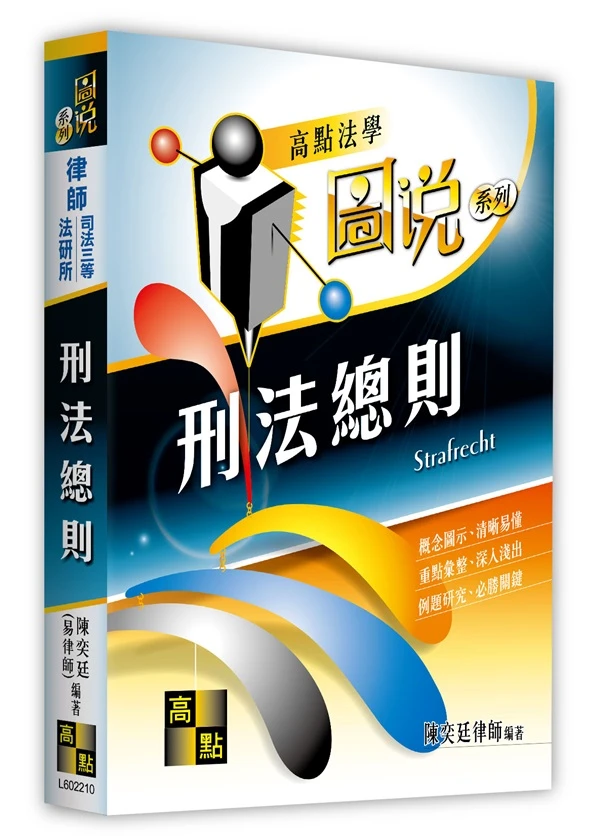

刑法總則
【圖說】
✨ 3D 立體書封・懸停可感應角度動態
刑法總則（圖說）
📖 點擊展開：元照官方原書簡介與五大編排特色 ▼
本書是以「刑法總則」為主的體系書，重點放在刑法體系的建構，說明較為詳細、完整並力求理解，如果距離考試僅剩兩、三個月，這絕對不是你的首選，請另外參考作者的《考點式刑法實務選擇一本通》，本書足以令你在面臨任何刑法問題時，至少有跡可循。
本次改版幅度甚大，除按慣例增補近一年來的新文獻，並就重傷、公務員、不能未遂、中止未遂、結果加重犯、緊急避難、規範性構成要件錯誤等諸多章節，進行翻整改寫；另也鑑於實務見解的重要性與日俱增，本版起嘗試將具代表性的憲法法庭裁判、最高法院刑事庭裁判、最高法院大法庭裁定，精選後置於引註處供參，並以底線標記重點，期望讓讀者們在了解學理之餘，也能掌握實務脈動。
第一章 犯罪的概念
嚴格依據教材第 1-1 頁內容收錄・附柴犬教授白話講堂 (匯出版)
一、犯罪的概念：一個壞人做了一件壞事
刑法是一部處理犯罪的法律。至於何謂犯罪？簡單說，「一個壞人」做了一件「壞事」就是犯罪。經驗告訴我們判斷誰是壞人非常困難，但判斷一件壞事卻比較容易，因此我們決定先判斷「是否有一件壞事發生」，再判斷「做這件壞事的人是不是一個壞人」。
基於經驗的累積，會做壞事的人絕大多數（不是百分之百！）都是壞人，所以確定一件壞事的發生，就先「推定」做這件壞事的人是一個壞人，這就是「壞事推定壞人」原則。
有鑑於這只是一個經驗上的直覺假設，而人類經驗卻不完全可靠，使用推定這個法律概念，為我們保留反證推翻假設的機會。我們將壞事以「不法」代稱，壞人以「罪責」代稱，前述的推定模式就是「不法推定罪責」原則，而推翻罪責推定的理由稱為「阻卻罪責事由」。
二、不法推定罪責原則 架構圖解
🐾 柴犬教授的名師白話客廳

柴柴法學教授
刑法總則權威解讀德國慕尼黑大學法學博士 • 柴柴法學院終身特聘講座教授
如果路上有人一拳把店家玻璃砸碎了，監視器一拍，客觀鐵證如山：「這是一件不折不扣的壞事（不法成立）」！壞事最直觀、最客觀，誰都抵賴不了，所以刑法審查永遠排在第一位。
大白天在路上沒事砸窗的人，社會生活經驗八九成都是蓄意破壞的惡徒！為了司法審判效率，法律先行常理預設：「既然幹了壞事，八成就是壞人（罪責推定）」！
人類經驗不保證百分百正確！萬一他是為了撲滅店內大火急著救嬰兒才砸窗呢？這時候只要能舉出正當反證，法律就把壞人標籤當場撕掉，這就是「阻卻罪責」！
🔍 德牧巡查官・現行法規雷達查核
「報告讀者！我是法規巡查官德牧督察 ⚖️。針對本小節推導之核心法理，我已連線中華民國全國法規資料庫完成 2026 現行法規校驗：」
「行為非出於故意或過失者，不罰。過失行為之處罰，以有特別規定者，為限。」條文穩定有效，確立不法與罪責之核心防線。
各條文均已完成 2026 現行法比對，包括 § 18 責任年齡（滿 18 歲完全責任）、§ 19 精神障礙與原因自由行為均已納入最新司法實務見解！
⚖️ 三、金毛大律師・實戰案例法庭拆解席
「庭上及各位研讀夥伴！我是實務法庭首席辯護律師金毛 Counselor ⚖️。法律的生命不在於邏輯，而在於生活與判決實務！以下直接進入教材第 1-2 ～ 1-3 頁實戰法庭案例攻防現場！」
「不知者真的無罪嗎？如果你是剛入境的外國觀光客，完全不知道台灣禁止嚼檳榔亂吐汁被罰，這叫『有正當理由而無法避免』，法律可以免除罪責；但若你住在台灣好幾年，酒後駕車卻推託『不知道酒駕犯法』，這種『本應知道卻不注意』的不知，法律絕不會放過你，最多只能按情節減輕處罰喔！」
「10 歲小孩玩火燒掉整排鄰居陽台，客觀上幹了天大的壞事，但由於大腦思維還在幼童發育階段、缺乏辨識是非的完全責任能力，法律只能責令父母民事賠償並啟動少年保護管束，絕對不能當成成年罪犯直接銬進牢房（不罰）；但滿 18 歲就是具備完全能力的成年人了，任何違法惡行都必須自負全責！」
被告：「吾乃伏虎羅漢降世，擊殺九世惡人乃替天行道！」
律師：「我的當事人病得不輕，他根本不知道自己在幹嘛。」
「當行為人發病時深信自己是『伏虎羅漢降世替天行道』而殺人，他當時的認知已經完全被大腦病魔綁架，根本無法分辨『這是違法殺人』。刑法非難的是『出於自由意志而做出的惡行』，絕非處罰大腦受疾病摧殘的病人！因此法律宣告不罰，並由法院判令入專門機構施以監護醫療！」
被告：「……（比手畫腳）。」
律師：「我的當事人既聾且啞，智識水準較差，會犯下此等惡行實屬情有可原。」
「自幼既聾且啞的人，成長過程如同身處溝通孤島，難以透過聲音語言流暢吸收法規範與社會倫理訊息。法律基於人道關懷，賦予法官『得減輕其刑』的恩惠裁量；但實務見解極其嚴格，必須是自幼同時聾且啞，若後天成年後才失聰失語，心智早已健全，就不能拿這條來求情免責喔！」
「面對歹徒赤手空拳追打，你情急之下掏出手槍當場把他擊斃——客觀上這防衛手段顯然過頭了（不法成立，無法阻卻違法）；但在生死交關、極度驚恐的幾秒鐘內，誰能冷靜拿天平精確秤出剛剛好的反擊力道？法律能體察凡人在極限恐慌下的脆弱，所以在『罪責』層次給予得減輕或免除其刑的寬恕事由！」
「研讀完案例 1-1 到 1-5，同學們發現共通點了嗎？這五個被告全部都幹了不折不扣的壞事（不法成立）！但為什麼有人不罰、有人減刑？因為刑法是講理的，不是機械式懲罰。當行為人有『不知法、年紀幼、精神病、生理障、急過頭』等情有可原的苦衷時，法律就把原本貼在他身上的『壞人標籤』當場撕掉，這就是阻卻罪責！」
四、超法定阻卻罪責事由與期待可能性
立法雖密仍有一疏：超法定阻卻罪責事由
當然立法雖密仍有一疏，若是在刑法典中找不到反證推翻理由，也允許找尋刑法典外的理由，亦即「超法定阻卻罪責事由」。
現今犯罪體系以「行為人有無（不做壞事的）期待可能性？」作罪責的實質非難核心，若行為人可被期待不做壞事便是具備罪責。既然期待可能性是罪責的核心，那麼法定或超法定阻卻罪責事由都必須依循期待可能性來詮釋。
「天下父母心！看到幼兒從床上跌落頭破血流，父母當下必然心急如焚、手忙腳亂，滿腦子只想搶救孩子的小命，社會根本無法苛求他在那種極度恐慌的瞬間還能冷靜優雅地拔掉熨斗插頭！法律不是冷酷的機器，既然『法不能強人所難』，社會無法期待他在極端危難中做出完美合法的行為，就不能非難他為壞人！」
「請同學們牢記這句靈魂金句：『不法是客觀的壞事，罪責是主觀的壞人。』
為什麼要區分『法定』與『超法定』？因為成文法再縝密，也算不盡人間的所有危難苦楚。只要行為人身處極限困境，讓法律秩序『無法期待他做出合法行為』時，國家就失去了對他個人施加非難與刑罰的正當性基礎！」
🥊 五、壞事（＝不法）該如何判斷？直覺式巴掌比喻
所謂壞事（＝不法）就是「無緣無故做出令人覺得不舒服的行為」。其實這是種直覺式觀察，試想有個陌生人突然衝過來賞你一巴掌：
代表重要生活利益（身體法益）遭受破壞。歸納寫於刑法分則各罪名（殺人、傷害等），法律用語即「構成要件該當性（形式不法）」。
這突顯出對方行為是莫名其妙的。基於便利，確認法益侵害便直接「推定」無正當理由，法律用語即「違法性（實質不法）」。
📊 六、構成要件該當性推定違法性原則（體系流程）
當行為該當構成要件而被推定為無正當理由後，法律持續給與行為人反證推翻的機會，亦即可以主張一些有利於己的理由，證明法益侵害是正當的。
柴柴教授 • 體系流程圖 30 秒大白話速讀
監視器拍到你揮拳揍人、打碎玻璃，客觀行為直接符合刑法罪名描述！
大白天沒事扁人，生活常理 99% 都是惡徒無理作惡，直接推定「實質違法」！
萬一你是被惡霸追打才還手？正當理由（阻卻違法）一亮出來，推定當場撤銷！
⚖️ 七、阻卻違法事由之法定例示（案例 1-7 ～ 1-11）
「醫師施行人工流產，客觀上的確終止了胎兒生命（造成重大法益侵害）；但這是在符合《優生保健法》法定事由下的專業醫療。法規範親口授權『你可以做』，國家的法秩序全面為你背書，這叫『有正當理由的行為』，所以違法性當場阻卻，絕不是壞事！」
「基層員警遵照分局長合法書面命令查扣贓車，雖然動了人民財產，但他只是國家公務機器的忠實螺絲釘，依命令辦事阻卻違法；但如果長官私自喝醉命令你『去把隔壁老王痛扁一頓』，你明知這是違法命令還跟著照做，法律絕對不保你喔（明知違法不在此限）！」
「外科醫生拿手術刀劃破肚子、割除盲腸或截除壞死肢體，客觀上百分之百符合重傷害罪的構成要件！但醫師是出於正當醫療業務、符合醫療常規並取得病人同意，這是救人利民的社會分工，當然阻卻違法不罰！」
「『正義絕不向不正義低頭！』走在路上惡霸無緣無故揮拳打你，你當下揮拳回擊把他撂倒在地。雖然你打傷了他，但你是為了自我防衛，全社會與法律都支持你反擊，這叫做正當防衛，完全合法！」
「路上突然殺出一隻發狂的比特犬追咬，眼看快被撕裂，你一腳踹破路人花園木門躲進去。雖然侵入了民宅並破壞了木門，但你拿別人次要的財產法益來換自己無可取代的生命，這叫做無奈但合法的轉嫁危難（緊急避難），合法阻卻違法！」
「這五個法定事由，雖然都造成了別人的法益損害（動了胎兒、動了財產、開刀傷了身體、打傷了流氓、踹壞了鄰居木門），但為什麼不是壞事？因為背後都有法律允許的正當理由！整體法律秩序告訴你：『這時候這樣做是對的、被允許的！』有正當理由，壞事就不成立（阻卻違法）！」
⚖️ 八、超法定阻卻違法事由與利益衡量（案例 1-12 ～ 1-15）
「『你情我願，法律不瞎操心！』黑白猜輸了被打巴掌、打耳洞穿鼻環、拳擊賽在擂台上互毆，只要被害人事前有理性自由承諾放棄自身身體法益，法律就尊重你的自主決定，所以當場阻卻違法！」
「『手只有兩隻，只能救一個！』兩名親生孩子同時在火場，父母都有法定救助義務；但在時間與肉體極限下，奮力抱出一個孩子已是極限。法秩序不能怪你沒長出千手千眼，你盡全力履行了一項義務，就不算壞事！」
「『生命 vs 櫻桃：天平完全倒向一邊！』老爺爺雖然行動不便只能開槍保衛財產，但拿『小學生的無價性命』去換『一顆幾塊錢的櫻桃』，利益懸殊大到誇張，屬於極端的權利濫用，法秩序絕對不准！」
「『救人也不能把別人當活體零件庫！』雖然輸血能保全甲的性命，但強行按倒拒絕的丙抽血，直接把活生生的人降格為單純的醫療工具，嚴重踐踏憲法的人性尊嚴！手段不正當，再崇高的目的也枉然！」
「在超法定阻卻違法中，最核心的考驗就是『利益衡量』！同學們請記住這兩把尺：第一把是結果尺（櫻桃案），犧牲的利益絕不能比保全的利益大太多；第二把是手段尺（輸血案），絕不能為達目的不擇手段、把別人當成工具！兩把尺都通過，才能阻卻違法！」
🏛️ 九、阻卻違法體系展開與犯罪三階層體系論（三階論）統整
阻卻違法事由之體系展開（核心：合乎整體法秩序）
- 依法令之行為（§ 21 Ⅰ）
- 依命令之行為（§ 21 Ⅱ）
- 業務上正當行為（§ 22）
- 正當防衛（§ 23）
- 緊急避難（§ 24）
- 得被害人之承諾（如案例 1-12）
- 義務衝突（如案例 1-13）
三階論之審查體系統整：
首先審判行為人的所作所為是否符合分則條文的描述。
構成要件該當將推定違法性，因此必須找尋有無阻卻違法事由。
最後不法將推定罪責，所以必須找尋有無阻卻罪責事由。
「整本刑法總則的骨架，就是這套『打怪闖三關』遊戲！法官在判定一個人有沒有罪，絕不是靠直討『抓去關！』，而是一步步過濾篩選：」
「你有沒有做刑法分則禁止的事？（例如伸手偷錢、拿刀砍人）。客觀做了壞事、主觀也想做，第一關入罪該當！」
「推定違法，但你有沒有正當理由？是警察抓通緝犯（§21）？正當防衛（§23）？緊急避難（§24）？有理由就翻盤不罰！」
「這確實是壞事，但在當下處境能怪你嗎？滿 18 歲嗎（§18）？精神正常嗎（§19）？有其他選擇嗎（期待可能性）？不能怪你就免責！」
🎯 十、犯罪三階層體系論之深化：目的犯罪體系與客主觀綜合評價
基於三階論，我們再為他添加些內涵。早期學說認為不法是壞事的外在判斷，罪責是壞人的內在判斷，因而主張不法是純客觀的，罪責則是純主觀的。現今學說受目的行為理論影響，認為目的乃判斷不法的重要基礎，因此不法不是純客觀的，而是客、主觀的綜合評價（目的犯罪體系）。
三階論搭配目的犯罪體系，與不法有關係的著層都有客、主觀要件之別，構成要件該當性分「客觀構成要件」與「主觀構成要件」，違法性也分「客觀阻卻違法要件」與「主觀阻卻違法要件」。此外，構成要件該當發生推定效力後，要推翻違法性推定，必須阻卻違法事由客、主觀要件均該當，否則推定效力將繼續維持，只能進入罪責審查。
「『腦補被害不是正當防衛！』路人只是長得兇一點向你問路，你心裡嚇得要死搶先揮拳把人家打骨折。雖然你心裡真的以為自己在防衛（具備主觀防衛意思），但現實中根本沒有任何不法侵害（客觀要件零分）！客主觀缺一不可，所以違法性推翻不了！」
「『壞人巧合救了自己，法律不發好人獎！』甲本來就想殺死仇家乙，開槍射殺純粹是仇殺！就算事後發現乙口袋裡也拿著槍正瞄準甲，甲在開槍瞬間完全沒有『我是為了保護自己』的自衛意思，主觀純屬惡意，法律絕對不允許巧合翻盤阻卻違法！」
🧩 十一、犯罪二階層體系論（二階論）與四塊拼圖大對決
學理上另有主張「犯罪二階層體系論（簡稱二階論）」，與通說最大差異在建構不法的方式。很多人以為二階論不區分TB與R，這是個天大誤解，實際上二階論所有不法組成要素都與三階論相同，只是排列組合不同罷了：
三階論是由「構成要件該當性與違法性」出發建構不法，二階論則是由「客觀要件與主觀要件」出發建構不法。客觀不法係「客觀構成要件該當且無客觀阻卻違法要件」，主觀不法係「主觀構成要件該當且無主觀阻卻違法要件」。換言之，構成要件該當推定違法性原則將各自在客觀不法與主觀不法中產生作用，這是與三階論的最大不同。
簡單說不法是由「客觀構成要件、主觀構成要件、客觀違法性要件及主觀違法性要件」四塊拼圖所組成，三階與二階論，僅僅是四塊拼圖的不同排列組合，因此兩種體系在大多數案件中會得出相同結論。
「很多法律系新生一聽到『二階論』就以為它不分構成要件和違法性，這真是天大的冤枉！同學們把刑法想像成四塊七巧板拼圖：」
第二章 刑法的論罪結構
嚴格依據教材第 1-13 ～ 1-16 頁內容收錄・附柴犬教授白話講堂 (匯出版)
一、構成要件的本質與「故意＋既遂」處罰原則
構成要件是經驗累積的產物，能夠被編寫成犯罪構成要件之所作所為，必然都是最典型的不法，也可以說只要是身為人類都無法忍受的犯行。例如英美法中所謂的「重罪」，包括謀殺、強制性交、強盜、夜間侵入住宅、惡意傷害、放火等等，都是毫無疑問的處罰典型，其中最無爭議的就是殺人罪。
構成要件該當性有客觀與主觀之別，以殺人罪為例，立法者經驗上所設想的殺人係「出於殺人故意而殺死他人之行為」，亦即客觀與主觀皆完全該當之情形，學理上將客觀該當稱為「既遂」，至於主觀該當則稱為「故意」，「故意＋既遂」是立法者最想掌握的處罰原則。
若客觀未該當是「非既遂（≠ 未遂）」，主觀未該當是「非故意（≠ 過失）」。非既遂與非故意原則上都不足以建構行為的可罰性，若要想例外地擴張處罰，除要有法律的明示處罰規定外，還必須滿足其他犯罪成立要件。
二、犯罪基本審查流程圖 架構圖解
| 審查階層 | 核心審查問題 | 原則與具體內涵 | 例外與法規依據 |
|---|---|---|---|
| 1. 行為 | 刑法意義之行為？ | 確認功能、過濾功能（排除非行為） | 分類：作為、純正/不純正不作為 (§ 15) |
| 2. 構成要件 (TB) | 法益侵害形式為何？ | 原則：故意既遂犯 (§ 13) | 例外：未遂犯 (§ 25)、過失犯 (§ 12、14) |
| 3. 違法性 (R) | 有無阻卻違法事由？ | 可以阻卻違法：法定 (§ 21~24) 與超法定 | 不能阻卻：挑釁防衛、命令違法 (§ 21Ⅱ) |
| 4. 罪責 (S) | 有無阻卻罪責事由？ | 可以阻卻罪責：責任能力 (§ 18, 19Ⅰ)、期待可能 | 不能阻卻：原因自由行為 (§ 19 Ⅲ) |
| 5. 其他刑罰要件 | 有無阻卻刑罰事由？ | 不能阻卻：依法發動國家刑罰權 | 可以阻卻：客觀處罰條件、個人排除/解除 |
柴柴教授 • 論罪流程圖 30 秒大白話速讀
先確定是人為控制的舉止，再比對符合刑法分則哪條罪名。原則抓故意既遂，例外抓未遂過失！
查有沒有正當理由（阻卻違法）與苦衷減免（阻卻罪責）。自導自演挑釁或買醉裝瘋者，通通不准免責！
若全部過關且無政策免除事由，正式宣告成立○○罪之既遂犯、未遂犯或過失犯，發動刑罰！
🐾 柴犬教授的名師白話客廳（論罪結構篇）
柴柴法學教授
刑法論罪結構權威解讀德國慕尼黑大學法學博士 • 柴柴法學院終身特聘講座教授
刑法是國家最嚴厲的手銬與牢房！只有當一個人「心裡清清楚楚就是要作惡（故意），且現實也把壞事幹成了（既遂）」，抓他去關才毫無爭議。這就是分則所有罪名的基礎藍本！
沒做成（非既遂）或沒想做（非故意），原則上都不該罰！要破例抓人，法律必須白紙黑字寫明。而且未遂要審「有沒有動手著手」，過失要審「能不能預見」，絕不能亂扣帽子！
想拿正當防衛當藉口去設局砍人（挑釁防衛）？想把自己灌醉假裝發瘋再去行兇（原因自由行為）？法律絕不受騙！自陷危難或權利濫用，阻卻事由當場失效！
🔍 德牧巡查官・現行法規雷達查核
「報告讀者！我是法規巡查官德牧督察 ⚖️。針對第二章論罪結構所涉及之核心條文，已全數連線中華民國全國法規資料庫完成 2026 現行法規核對：」
「行為非出於故意或過失者，不罰。過失行為之處罰，以有特別規定者，為限。」條文穩定有效，確立不法與罪責之核心防線。
已著手於犯罪行為之實行而不遂者，為未遂犯。未遂犯之處罰，以有特別規定者為限，並得按既遂犯之刑減輕之。
「前二項規定，於因故意或過失自行招致者，不適用之。」自 94 年修正明文化，徹底堵塞借酒裝瘋免責漏洞。
⚖️ 三、金毛大律師・實戰案例法庭拆解席（未遂與過失：案例 2-1 & 2-2）
「庭上及各位研讀夥伴！我是實務法庭首席辯護律師金毛 Counselor ⚖️。以下直接進入教材第 1-13 ～ 1-14 頁實戰法庭案例攻防現場！」
「甲拿西瓜刀砍人但乙閃過了，客觀事實上『乙根本沒死』！依照處罰原則『沒死人＝非既遂＝原則不罰』。那為什麼警察還能銬他？因為刑法第 271 條第 2 項白紙黑字寫著『處罰未遂犯』！而且甲朝人揮刀已經密接接近被害人身體，客觀上滿足了『著手』，心裡也確實想要對方死，因此才能例外擴張處罰未遂犯！」
「這就是『非故意 ≠ 過失』的最佳生活範例！甲心裡沒有想殺乙，所以『非故意』；但非故意就一定直接跳到過失嗎？絕對不行！你必須另外檢驗兩件事：第一、法律有沒有明文處罰過失致死？（有，§ 276 Ⅰ）；第二、在路上拿西瓜刀亂甩，一般人能不能預見會砍死路人？（當然能預見，且應注意而不注意）。兩關全過，才能扣上過失犯的帽子！」
「研讀完案例 2-1 與 2-2，同學們發現刑法擴張處罰的鐵律了嗎？原則只抓故意既遂！沒成功（非既遂）想抓未遂，一定要看法律有沒有特別規定、動手了沒（著手）；沒打算做（非故意）想抓過失，一定要查法律有沒有特別規定、能不能預見。兩道門檻缺一不可，絕不能隨意扣帽子！」
🚨 四、【解題提示】直覺誤區辨正與 § 12 之法條邏輯證明
解題第一天條：切莫憑「生活直覺」妄斷「法律過失」！
初學者解刑法考卷時，最致命的直覺謬誤就是：看到被告「不是故意」，就直覺判定他「成立過失犯」！請牢記：在刑法體系中，非故意只代表排除故意既遂，過失之成立必須完全依賴法律條文的明文授權。
誤將生活語言中「不是故意那就是不小心」直接套入刑法，忽略刑法第 12 條第 2 項「有特別規定者為限」之罪刑法定嚴格要求。
必須先翻閱法條查明分則該罪名是否明文「處罰過失」（如過失致死有罰，但過失毀損、過失竊盜不罰），且具備預見可能性始得定罪！
【法條規定】「行為非出於故意或過失者，不罰。」
• 若以集合邏輯詮釋：行為的可罰性 ＝ 故意 ∪ 過失。
• 逆向否定：非故意且非過失 ＝ 絕對不罰。
• 結論證明：因此「非故意」僅代表其不落在「故意」集合，若無特別法明文將其劃入「過失」集合，一律回歸「不罰」之常態！
⚖️ 五、違法性與罪責階層阻卻事由之例外排除（案例 2-3 & 2-4）
違法性與罪責之例外——阻卻事由之排除與權利濫用
違法性與罪責的阻卻事由，本為保障無辜人民免受冤罰；但若行為人企圖「濫用防衛權自導自演挑釁他人」，或「故意藉酒裝瘋以求免除刑事責任」，法律秩序絕不受其愚弄！此即違法性與罪責階層中的例外排除制度。
「正當防衛是給『無辜受害者』防禦的護身符，不是給『釣魚惡霸』設局揍人的免死金牌！你先拿雨傘戳人家車窗激怒對方，等對方忍不住動手再假裝『正當防衛』把他打趴，這叫『權利濫用』！在違法性審查階層，法律直接沒收你的防衛權，照樣成立故意傷害罪！」
「想靠喝高粱裝瘋賣傻逃避刑責？門都沒有！雖然動手當下爛醉如泥、辨識能力歸零，但『是你自己在清醒時決定要把自己灌醉去行兇的』！刑法追溯你在原因階段的自由意志，把責任連鎖扣死，照樣定故意殺人罪！」
「刑法體系層層精密，但最核心的價值是『誠實與正義』。無論是違法性階層的正當防衛，還是罪責階層的責任能力，只要是自導自演挑釁他人（挑唆防衛），或是買醉自陷精神障礙（原因自由行為），法律絕不受騙，阻卻事由當場失效！」
📑 六、全章總結：處罰原則、例外體系與其他刑罰要件
典型罪名之「故意既遂 / 未遂 / 過失」明文對照矩陣
嚴格檢驗各罪名之明文規定，未明文規定者即屬非罰範圍：
| 罪名 | 原則：故意既遂 | 例外：未遂犯規定 | 例外：過失犯規定 | 處罰結論 |
|---|---|---|---|---|
| 殺人罪 | § 271 Ⅰ 罰 | § 271 Ⅱ 有罰 | § 276 Ⅰ 有罰 | 既遂、未遂、過失皆罰 |
| 傷害罪 | § 277 Ⅰ 罰 | 無明文（不罰） | § 284 有罰 | 罰既遂與過失，不罰未遂 |
| 毀損罪 | § 354 罰 | 無明文（不罰） | 無明文（不罰） | 僅罰故意既遂，未遂過失不罰 |
🏛️ 第五階層「其他刑罰要件」三大體系卡片：
如聚眾鬥毆致人死傷（§ 283）之「致人死傷」結果，或違背安全駕駛罪之定額酒精數值，行為人主觀上無庸對此具備故意。
如憲法保障立法委員於院內之言論免責權、或公務員於特定業務職務上之豁免特權，自始排除國家刑罰權發動。
如中止犯（§ 27）之因己意中止並積極防止結果發生、或自首（§ 62），國家基於刑事政策目的而免除或減輕其刑。
刑法的運作、
操作原理與法律效果
本篇是正式踏入刑法學習前的暖身，介紹影響刑法運作的四大支柱，以及刑法操作的前理解（諸如刑法的適用效力、解釋方法）。至於刑法的法律效果，這個通常被教科書或參考書放在最尾巴說明的刑罰理論，筆者挪移到本篇提前整理，旨在提醒大家「慎思慎刑」的核心理念，也與刑法最後手段性原則接軌。
第一章 刑法的運作原理
從「應報思想」與「預防思想」出發，探討刑罰手段的極致嚴厲性與謙抑節制，進而演繹出支撐整部刑法體系的「四大支柱」。
體系演繹：刑法目的起點 ➔ 刑罰手段 ➔ 四大支柱推導
結構化梳理教材第 2-1 頁四大核心邏輯階層刑法的目的除了對過往犯罪加以制裁外（應報思想），更展望未來希冀減少犯罪發生（預防思想）。其實無論根據何種思想，刑法的最終目的都是保護「人類極為重要生活利益」，簡稱法益保護。刑法基於法益保護的目的，允許使用較為嚴厲的手段，這種手段就是刑罰。刑罰的嚴厲性可以從法律效果窺見一二，生命的剝奪或自由的喪失，無疑是各種法律之最。然刑罰施加必須與目的追求成正比，若不值得動用刑罰便應節制，縱使不得不發，也應遵循下列準則：基於應報，刑罰不允許超出行為人的責任範圍，亦即小罪不能大罰；基於預防，刑罰的依據必須明確，不能有任何含糊使人民無所安其手足。
刑法的目的在保護重要的人類生活利益，即法益保護原則；而刑罰作為手段，必須與所追求的目的成比例，逼不得已才動用刑罰，這是最後手段性原則（＝謙抑性思想）。即使動用刑罰，由使人民安措其手足導出罪刑法定原則，再由小罪不能大罰帶出罪責原則。這四大原則呈現出刑法的四大支柱，一切的刑法問題皆脫離不了、也必須終歸於這四大支柱。以下分別介紹法益保護原則（第一節）、罪刑法定原則（第二節）以及罪責原則（第三節），至於最後手段性原則與罪刑法定、罪責原則乃互為光影，故一併納入第二、三節中。
著眼於回顧過往：對已發生的犯罪行為施加相稱制裁，平復受侵害的法秩序。
著眼於展望未來：希冀透過刑罰威嚇與矯治，有效減少未來犯罪發生。
為達法益保護，刑法允許動用最嚴厲手段——「刑罰」。其法律效果伴隨「生命的剝奪（死刑）」或「自由的喪失（徒刑、拘役）」，屬各法律之最。
刑罰施加必須與目的追求成正比，若不值得動用便應節制，逼不得已才動用，此即「最後手段性原則（＝謙抑性思想）」。
導出【罪刑法定原則】（明確性・不可含糊）
導出【罪責原則】（小罪不能大罰・重罪重罰）
刑法的四大支柱超級對照矩陣（The Four Pillars）
刑法的目的在於保護重要人類生活利益。無實質法益受侵害或具體危險，即無動用刑法制裁的正當性。
刑罰手段極度嚴厲，必須與目的成比例。民事賠償或行政管制足以處理時，不得輕易動用刑罰。逼不得已才出鞘！
基於預防思想導出：處罰依據必須事先成文且明確，杜絕任何事後法與模糊規範，確保人民行止有所依循。
基於應報思想導出：刑罰不允許超出行為人責任範圍。無責任即無刑罰，重罪重罰、輕罪輕罰，罪刑相當。
Prof. Shiba's Plain Language Salon ｜ 解密課本「互為光影」背後的法學精髓
刑罰會剝奪人民的「生命」和「自由」，是法律武器庫裡威力最強的原子彈。如果鄰居欠你十塊錢、或是走路撞到肩膀，用民事賠償或道歉就能解決，就絕對不能動用刑法把人抓去關。逼不得已才出手，這就是「謙抑性（最後手段性）」！
「光」與「影」相伴而生！最後手段性要求國家節制刑罰，而國家要節制，就必須靠【罪刑法定】（只有法條明確寫要罰的才能罰，不能任意擴張）與【罪責原則】（罰的程度不能超過責任，小罪不能大罰）來落實。有了這兩大原則，最後手段性才不會淪為空洞口號！
第一章 子小節分節研讀地圖
探討法益概念、本質、機能以及保護的界限與範疇（教材第 2-1 底～2-4 頁）。
深入探討四大面向：習慣法禁止、類推適用禁止、明確性與溯及既往禁止（教材第 2-5～2-7 頁）。
無罪責即無刑罰、罪刑相當原則、準強盜罪合憲限縮與 112 憲判 19（教材第 2-7～2-8 頁）。